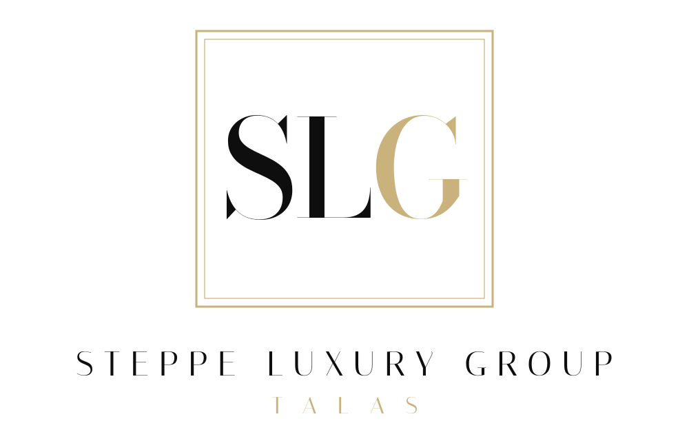

Steppe Luxury Group
Steppe Time: the autumn collection is in. Swiss automatic watches from 38,000 som, and the first ladies' pieces of the season. Viewing by appointment on Liberty Boulevard.
♥ 58 · Comment
Steppe Luxury Group, Talas, since 2008. The official home of European cars, Swiss watches and American electronics in the Zone: Steppe Motors, Steppe Time and Steppe Digital, the Altyn Galleria arcade and the boutiques of Liberty Row, the Steppe Residence and the Steppe Club. Head office in the Altyn Tower. Private appointments on request.
Steppe Luxury Group, Талас, с 2008 года. Европейские автомобили, швейцарские часы, американская техника: Steppe Motors, Steppe Time, Steppe Digital, галерея Altyn Galleria, бутики Liberty Row, Steppe Residence и Steppe Club.
10 locations on Kartalar: Talas 9, Nurzhan 1.
Steppe Time: the autumn collection is in. Swiss automatic watches from 38,000 som, and the first ladies' pieces of the season. Viewing by appointment on Liberty Boulevard.
♥ 58 · CommentLiberty Row welcomes a new boutique: Italian leather goods and travel pieces, now open at No. 7. Opening week: complimentary monogramming.
♥ 16 · CommentSteppe Motors: новые внедорожники 2027 модельного года уже в шоуруме. Тест-драйв по записи.
♥ 28 · CommentAltyn Galleria is ten years old this year. Thank you, Talas.
♥ 62 · CommentSteppe Digital ✓Steppe Digital ✓Steppe Residence ✓Steppe Club ✓Steppe Time ✓Liberty Row ✓Steppe Digital ✓Altyn Galleria ✓Steppe Motors ✓Impeccable service at Steppe Time. They resized the bracelet while I waited.